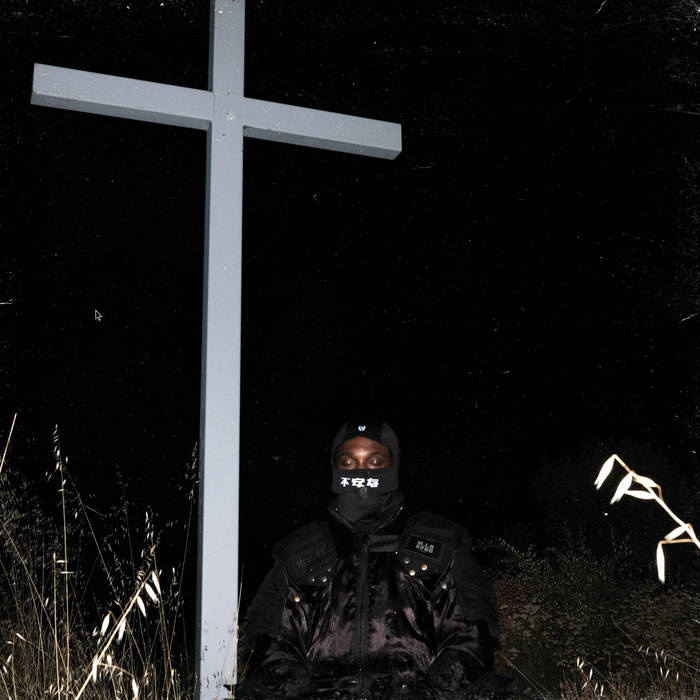
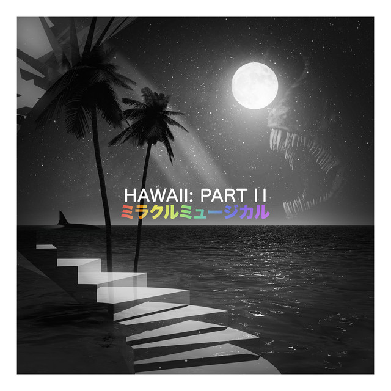

I LAY DOWN MY LIFE FOR YOU
JPEGMAFIA
I Lay Down My Life for You is the fifth studio album by the
rapper JPEGMafia, released on August 1, 2024. It features guest
appearances from Vince Staples, Denzel Curry and Buzzy Lee.
The album was released to positive critical reception.

OK Computer
Radiohead
OK Computer is the third studio album by the English rock band Radiohead,
released on 21 May 1997. With their producer, Nigel Godrich, Radiohead
recorded most of OK Computer in their rehearsal space in Oxfordshire and
the historic mansion of St Catherine's Court in Bath in 1996 and early 1997.
They distanced themselves from the guitar-centred, lyrically introspective
style of their previous album, The Bends. OK Computer's abstract lyrics,
densely layered sound and eclectic influences laid the groundwork for
Radiohead's later, more experimental work.

Hawaii: Part II
ミラクルミュージカル
Hawaii: Part II is an album by ミラクルミュージカル (Also known by its English
translation: Miracle Musical). The album was released independently on 12/12/12,
at 12:12:12 A.M. Four members of Tally Hall appear on this album: Joe Hawley,
Ross Federman, Rob Cantor, and Zubin Sedghi. Bora Karaca also appears. The album
is categorised under "World" music on iTunes, and Bandcamp however the whole album
shifts between genres, including pop, rap, and ballads.

My Beautiful Dark Twisted Fantasy
Kanye West
My Beautiful Dark Twisted Fantasy is the fifth studio album by the American
rapper Kanye West. It was released by Def Jam Recordings and Roc-A-Fella
Records on November 22, 2010. Retreating to a self-imposed exile in Hawaii
after a period of controversy in 2009 following his interruption of Taylor Swift
at the MTV Video Music Awards. Additional recording took place at Glenwood
Place Studios in Burbank, California, and Electric Lady and Platinum Sound in
New York City.

Por cesárea
Dillom
Por cesárea is the second studio album by Argentine singer, rapper and record
producer Dillom. It was released on 26 April 2024 and includes collaborations
with Andrés Calamaro and Lali.

Trench
Twenty One Pilots
Trench is the fifth studio album by the American musical duo Twenty One Pilots,
released on October 5, 2018, through Fueled by Ramen and Elektra Records.
Recorded in secret during a year-long public silence, it is a concept album
which explores mental health, suicide, and doubt, themes prominently featured
in the band's previous works, framed in the metaphorical city of Dema and the
surrounding continent known as "Trench". The album was also the first
release of the newly revived Elektra Music Group.

The Black Parade
My Chemical Romance
The Black Parade is the third studio album by American rock band My Chemical Romance,
first released on October 23, 2006, through Reprise Records. A predominantly emo,
alternative rock, pop-punk, hard rock, and punk rock concept album, it is centered on
the story of a dying man with cancer known as "The Patient", as he nears the end of his life.
The album was produced by the band alongside Rob Cavallo, and is the band's only studio album
to feature Bob Bryar on drums before his departure in 2010.